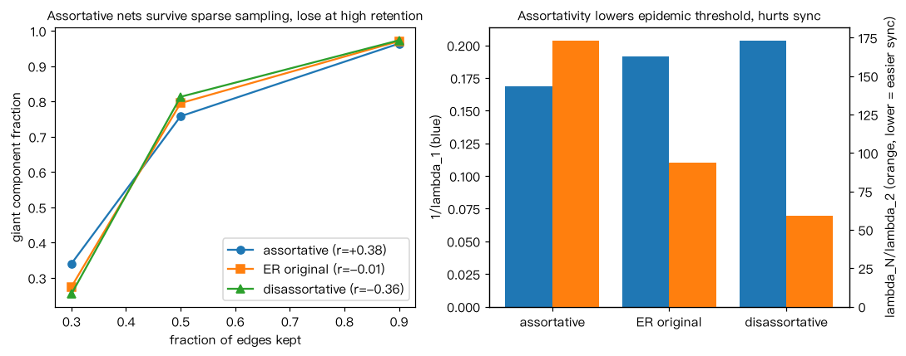

Example08 / 09
度相关如何改变巨连通分支、传播阈值与可同步性
从同一张 ER 随机图（N=2000,
Output输出图

Output文字输出
保留边比例: 0.30 0.50 0.90 同配 (p=0.5) r=+0.38 巨分支占比 0.341 0.758 0.964 | lambda_1=5.93 (SIS 阈值≈0.169) | lambda_N/lambda_2=172.9 ER 原始 r=-0.01 巨分支占比 0.275 0.795 0.971 | lambda_1=5.23 (SIS 阈值≈0.191) | lambda_N/lambda_2=93.8 异配 (p=0.5) r=-0.36 巨分支占比 0.255 0.813 0.973 | lambda_1=4.92 (SIS 阈值≈0.203) | lambda_N/lambda_2=58.9
Code代码
# 从同一张 ER 随机图（N=2000, <k>=4）出发，用 Xulvi-Brunet–Sokolov 重连（p=0.5）得到同配与异配版本。
# 比较：(1) 随机删边（键渗流）后巨连通分支占比；(2) 邻接矩阵最大特征值 lambda_1，
# SIS 模型的淬火平均场阈值约为 1/lambda_1；(3) 拉普拉斯特征值比 lambda_N/lambda_2（越小越易同步）。
# 解读：同配使 lambda_1 增大（高度节点聚在一起形成“储库”，阈值降低）、低保留率下巨分支更易存活，
# 但高保留率下巨分支更小；同配同时使 lambda_N/lambda_2 增大，可同步性变差。
import numpy as np
import networkx as nx
from scipy.sparse.linalg import eigsh
from scipy.sparse.csgraph import laplacian
def xbs_rewire(G, n_swaps, mode, p, seed):
rng = np.random.default_rng(seed)
G = G.copy(); dg = dict(G.degree()); edges = list(G.edges()); done = 0
while done < n_swaps:
i, j = rng.choice(len(edges), 2, replace=False)
(a, b), (c, d) = edges[i], edges[j]
nodes = [a, b, c, d]
if len(set(nodes)) < 4:
continue
if rng.random() < p:
s = sorted(nodes, key=lambda x: dg[x], reverse=True)
new = [(s[0], s[1]), (s[2], s[3])] if mode == "assortative" else [(s[0], s[3]), (s[1], s[2])]
else:
rng.shuffle(nodes)
new = [(nodes[0], nodes[1]), (nodes[2], nodes[3])]
if any(G.has_edge(*e) for e in new):
continue
G.remove_edges_from([(a, b), (c, d)]); G.add_edges_from(new)
edges[i], edges[j] = new; done += 1
return G
def giant_after_bond_percolation(G, keep, n_rep=10, seed=0):
rng = np.random.default_rng(seed)
edges = list(G.edges())
out = []
for _ in range(n_rep):
H = nx.Graph()
H.add_nodes_from(G)
H.add_edges_from([e for e in edges if rng.random() < keep])
out.append(max(len(c) for c in nx.connected_components(H)) / G.number_of_nodes())
return np.mean(out)
G0 = nx.gnm_random_graph(2000, 4000, seed=1)
M = G0.number_of_edges()
nets = {
"同配 (p=0.5)": xbs_rewire(G0, 3 * M, "assortative", 0.5, 1),
"ER 原始": G0,
"异配 (p=0.5)": xbs_rewire(G0, 3 * M, "disassortative", 0.5, 2),
}
print("保留边比例: 0.30 0.50 0.90")
summ = [] # 保存结果用于作图
for name, G in nets.items():
A = nx.to_scipy_sparse_array(G, dtype=float, format="csr")
lam1 = eigsh(A, k=1, which="LA")[0][0]
S = [giant_after_bond_percolation(G, q, seed=3) for q in (0.3, 0.5, 0.9)]
Gc = G.subgraph(max(nx.connected_components(G), key=len))
L = laplacian(nx.to_numpy_array(Gc))
ev = np.sort(np.linalg.eigvalsh(L))
print(f"{name:12s} r={nx.degree_assortativity_coefficient(G):+.2f} 巨分支占比 "
f"{S[0]:.3f} {S[1]:.3f} {S[2]:.3f} | lambda_1={lam1:.2f} (SIS 阈值≈{1/lam1:.3f}) "
f"| lambda_N/lambda_2={ev[-1]/ev[1]:.1f}")
summ.append((nx.degree_assortativity_coefficient(G), S, lam1, ev[-1] / ev[1]))
# 作图：键渗流后的巨分支占比，以及 SIS 阈值与同步性指标
import matplotlib.pyplot as plt
fig, ax = plt.subplots(1, 2, figsize=(10, 4))
labs = ["assortative", "ER original", "disassortative"]
for (r, S, lam1, ratio), lab, mk in zip(summ, labs, ["o", "s", "^"]):
ax[0].plot([0.3, 0.5, 0.9], S, marker=mk, label=f"{lab} (r={r:+.2f})")
ax[0].set_xlabel("fraction of edges kept"); ax[0].set_ylabel("giant component fraction"); ax[0].legend()
ax[0].set_title("Assortative nets survive sparse sampling, lose at high retention", fontsize=10)
x = np.arange(3)
ax[1].bar(x - 0.2, [1 / s[2] for s in summ], 0.4, label="SIS threshold 1/lambda_1")
ax2 = ax[1].twinx()
ax2.bar(x + 0.2, [s[3] for s in summ], 0.4, color="C1", label="lambda_N/lambda_2")
ax[1].set_xticks(x); ax[1].set_xticklabels(labs); ax[1].set_ylabel("1/lambda_1 (blue)")
ax2.set_ylabel("lambda_N/lambda_2 (orange, lower = easier sync)")
ax[1].set_title("Assortativity lowers epidemic threshold, hurts sync", fontsize=10)
plt.tight_layout(); plt.show()Run在浏览器中运行
首次加载 Python 环境约需 20–40 秒；可以修改参数后重新运行。